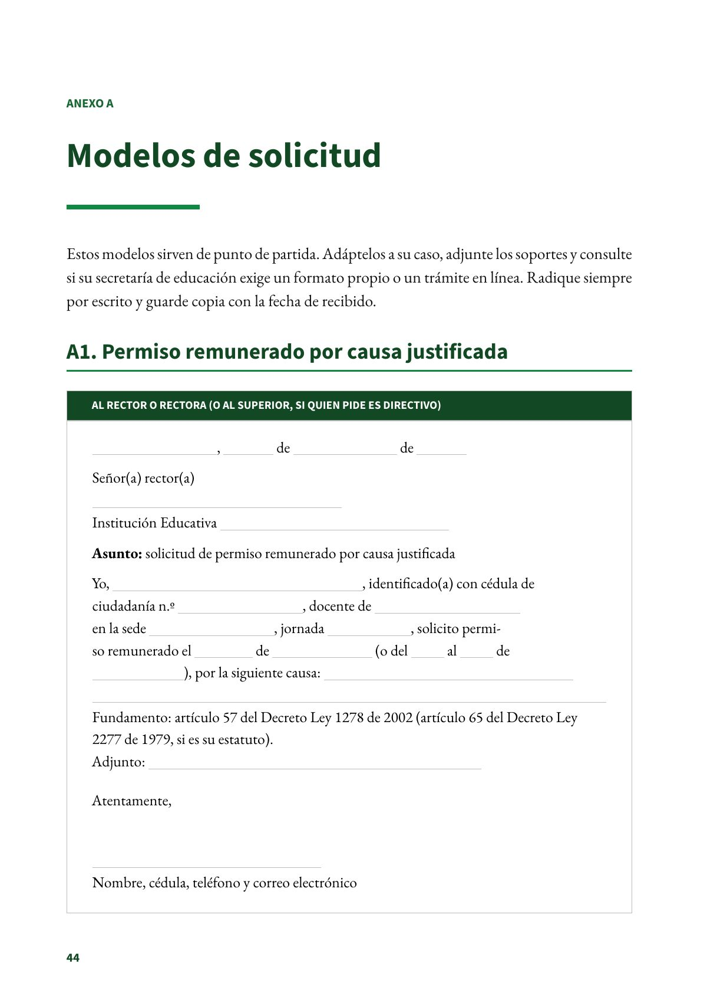
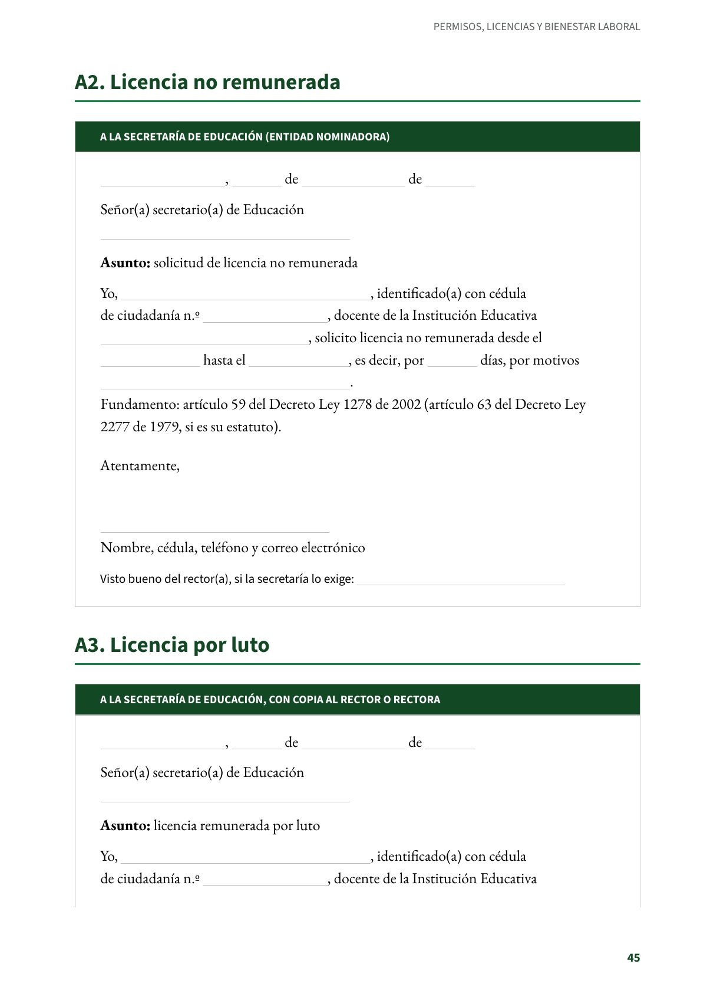
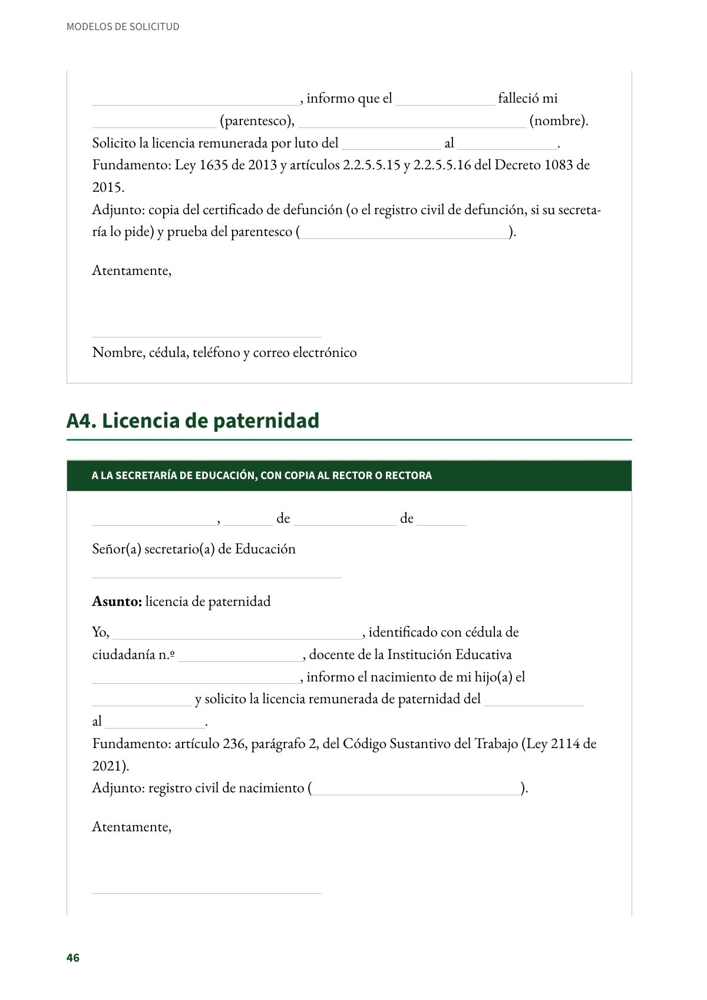
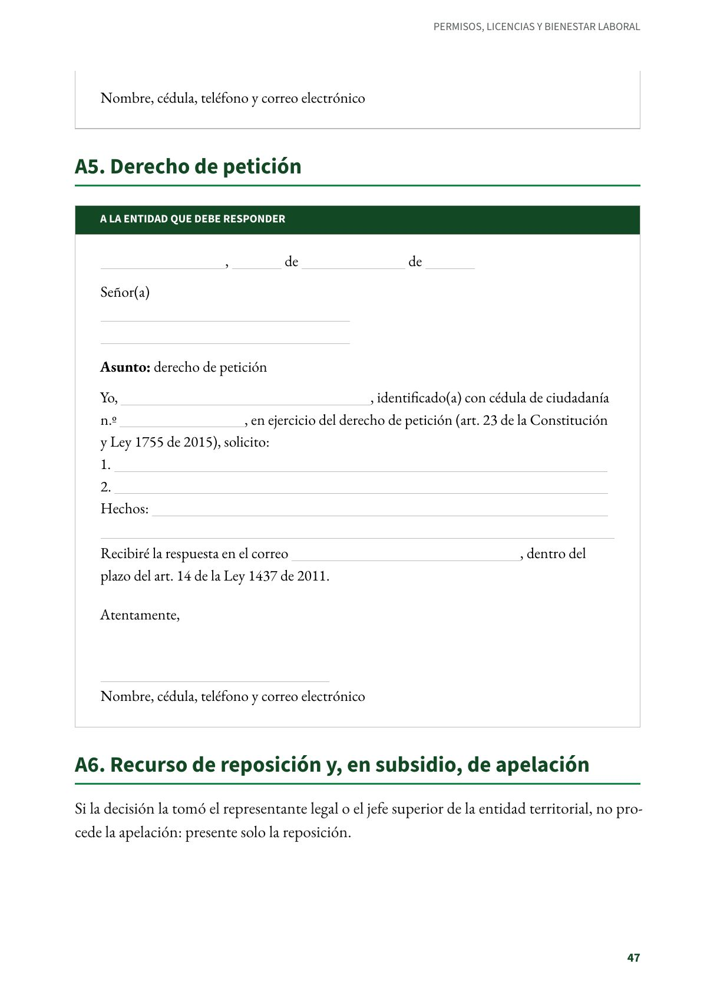
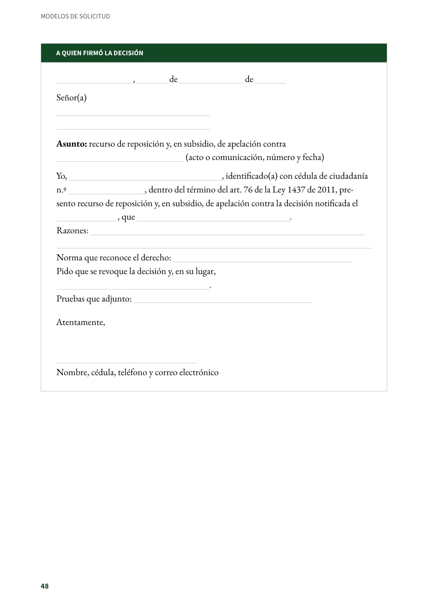

Modelos de solicitud
Seis modelos listos para diligenciar: permiso, licencia no remunerada, luto, paternidad, derecho de petición y recurso.
PDF · 5 págs. · 49 KBEstos modelos sirven de punto de partida. Adáptelos a su caso, adjunte los soportes y consulte si su secretaría de educación exige un formato propio o un trámite en línea. Radique siempre por escrito y guarde copia con la fecha de recibido.
A1. Permiso remunerado por causa justificada
Al rector o rectora (o al superior, si quien pide es directivo)
________, ________ de ________ de ________
Señor(a) rector(a)
________
Institución Educativa ________
Asunto: solicitud de permiso remunerado por causa justificada
Yo, ________, identificado(a) con cédula de ciudadanía n.º ________, docente de ________ en la sede ________, jornada ________, solicito permiso remunerado el ________ de ________ (o del ________ al ________ de ________), por la siguiente causa: ________ ________
Fundamento: artículo 57 del Decreto Ley 1278 de 2002 (artículo 65 del Decreto Ley 2277 de 1979, si es su estatuto).
Adjunto: ________
Atentamente,
________
Nombre, cédula, teléfono y correo electrónico
A2. Licencia no remunerada
A la secretaría de educación (entidad nominadora)
________, ________ de ________ de ________
Señor(a) secretario(a) de Educación
________
Asunto: solicitud de licencia no remunerada
Yo, ________, identificado(a) con cédula de ciudadanía n.º ________, docente de la Institución Educativa ________, solicito licencia no remunerada desde el ________ hasta el ________, es decir, por ________ días, por motivos ________.
Fundamento: artículo 59 del Decreto Ley 1278 de 2002 (artículo 63 del Decreto Ley 2277 de 1979, si es su estatuto).
Atentamente,
________
Nombre, cédula, teléfono y correo electrónico
Visto bueno del rector(a), si la secretaría lo exige: ________
A3. Licencia por luto
A la secretaría de educación, con copia al rector o rectora
________, ________ de ________ de ________
Señor(a) secretario(a) de Educación
________
Asunto: licencia remunerada por luto
Yo, ________, identificado(a) con cédula de ciudadanía n.º ________, docente de la Institución Educativa ________, informo que el ________ falleció mi ________ (parentesco), ________ (nombre). Solicito la licencia remunerada por luto del ________ al ________.
Fundamento: Ley 1635 de 2013 y artículos 2.2.5.5.15 y 2.2.5.5.16 del Decreto 1083 de 2015.
Adjunto: copia del certificado de defunción (o el registro civil de defunción, si su secretaría lo pide) y prueba del parentesco (________).
Atentamente,
________
Nombre, cédula, teléfono y correo electrónico
A4. Licencia de paternidad
A la secretaría de educación, con copia al rector o rectora
________, ________ de ________ de ________
Señor(a) secretario(a) de Educación
________
Asunto: licencia de paternidad
Yo, ________, identificado con cédula de ciudadanía n.º ________, docente de la Institución Educativa ________, informo el nacimiento de mi hijo(a) el ________ y solicito la licencia remunerada de paternidad del ________ al ________.
Fundamento: artículo 236, parágrafo 2, del Código Sustantivo del Trabajo (Ley 2114 de 2021).
Adjunto: registro civil de nacimiento (________).
Atentamente,
________
Nombre, cédula, teléfono y correo electrónico
A5. Derecho de petición
A la entidad que debe responder
________, ________ de ________ de ________
Señor(a)
________
________
Asunto: derecho de petición
Yo, ________, identificado(a) con cédula de ciudadanía n.º ________, en ejercicio del derecho de petición (art. 23 de la Constitución y Ley 1755 de 2015), solicito:
- ________
- ________
Hechos: ________
________
Recibiré la respuesta en el correo ________, dentro del plazo del art. 14 de la Ley 1437 de 2011.
Atentamente,
________
Nombre, cédula, teléfono y correo electrónico
A6. Recurso de reposición y, en subsidio, de apelación
Si la decisión la tomó el representante legal o el jefe superior de la entidad territorial, no procede la apelación: presente solo la reposición.
A quien firmó la decisión
________, ________ de ________ de ________
Señor(a)
________
________
Asunto: recurso de reposición y, en subsidio, de apelación contra ________ (acto o comunicación, número y fecha)
Yo, ________, identificado(a) con cédula de ciudadanía n.º ________, dentro del término del art. 76 de la Ley 1437 de 2011, presento recurso de reposición y, en subsidio, de apelación contra la decisión notificada el ________, que ________.
Razones: ________
________
Norma que reconoce el derecho: ________
Pido que se revoque la decisión y, en su lugar, ________.
Pruebas que adjunto: ________
Atentamente,
________
Nombre, cédula, teléfono y correo electrónico
Así se ve en el libro
5 páginas



